Лазери дозволяють нам виявляти відстані та зіткнення між акторами за допомогою ліній.
Наприклад, на наступному зображенні ми маємо актора з лазером, який визначає, чи є платформа під його ногами:
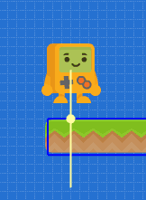
Кожен актор може мати скільки завгодно лазерів. Ідея використання лазерів полягає в тому, що ми можемо дозволити акторам виявляти відстані та реагувати на майбутні зіткнення.
Лазери можна створювати безпосередньо із редактора. Для цього ми повинні вибрати актора, а потім натиснути кнопку "Створити лазер" на панелі властивостей:
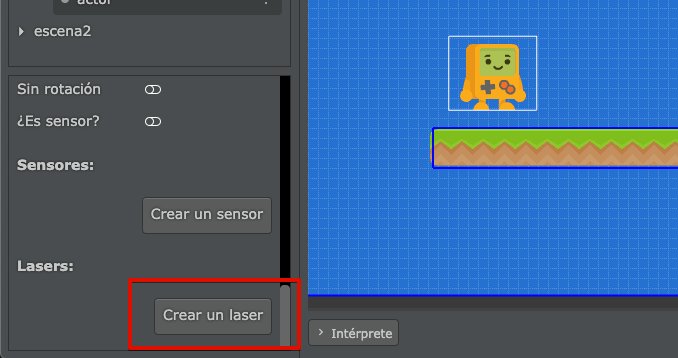
Після того, як лазер створено, ви повинні відрегулювати довжину та обертання:
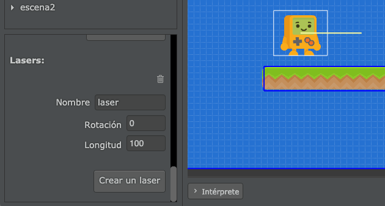
Наприклад, якщо ми хочемо знати, чи актор знаходиться близько до поверхні землі чи ні, ми можемо зменшити значення довжини та встановити поворот на -90 градусів, щоб лазер був спрямований донизу:
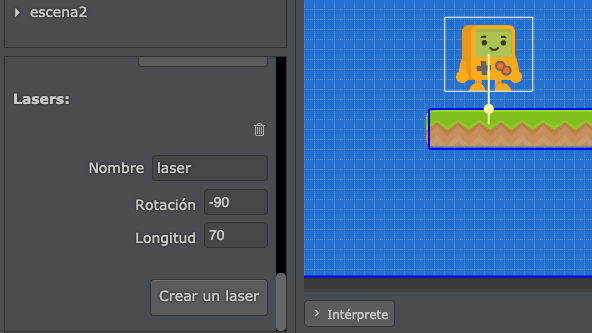
Лазери швидко реагують на зіткнення з іншими об'єктами. Лінія лазера вказує на точки усіх контактів з іншими акторами:
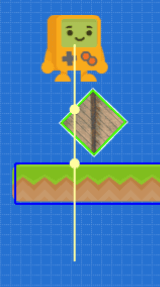
Звичайно, лазер виявить контакт лише з тими акторами, які мають певну фізичну форму. Наприклад, тут розпізнаються зіткнення з ящиком і платформою, а не з яблуком, оскільки воно не має фізичної форми:
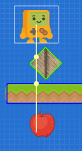
Після створення лазера в редакторі ми можемо написати код, щоб почати взаємодіяти з лазерами під час гри.
Давайте розглянемо це на прикладі, в якому персонаж буде визначати, чи знаходиться він на платформі чи ні. Таким чином, ми можемо створити лазер під назвою "pies" (ноги) і направити його на землю:
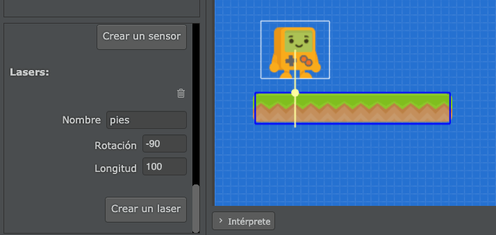
Тепер ми можемо перейти до коду актора і створити властивість під назвою pies, а потім зв’язати з нею лазер, викликавши функцію obtener_laser таким чином:
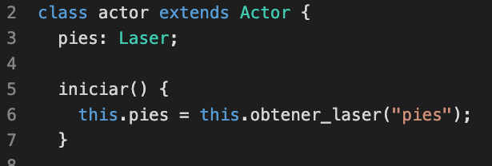
За допомогою цього коду тепер ми зможемо в будь-який час отримати значення лазера, який ми зв’язуємо із властивістю. Ось деякі з функцій для роботи з лазерами:
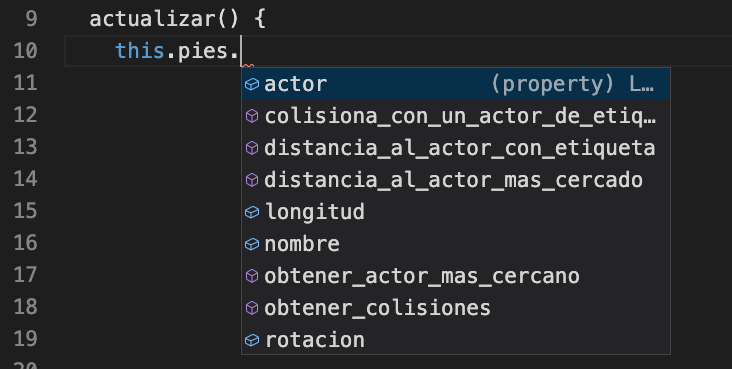
У нас є функції, щоб перевірити, скільки акторів на шляху лазера, як далеко кожен актор і багато іншого.
Наприклад, ми могли б змусити актора постійно говорити, як далеко знаходиться земля, використовуючи цю функцію в методі actualizar:
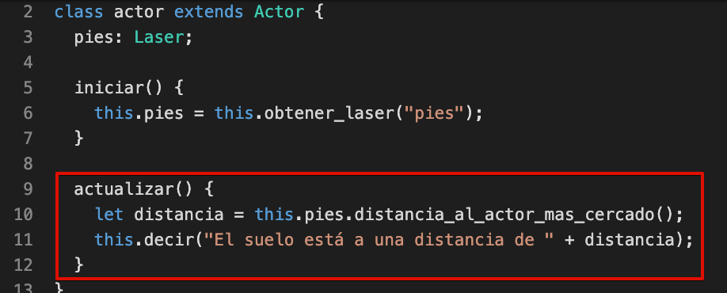
На ігровому екрані або в режимі паузи ми побачимо, що лазер інформує нас про те, що між актором (звідки починається лазер) до першого зіткнення з платформою є 55 пікселів:
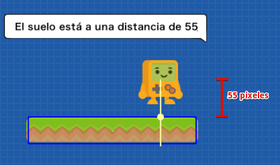
Зверніть увагу, що функція distancia_al_actor_mas_cercado завжди повертає число. А якщо поруч немає актора, число, яке повертається, дорівнюватиме довжині лазера.
У цьому разі, оскільки довжина лазера становить 100, якщо він не відшукає зіткнення з чимось, він поверне це значення:
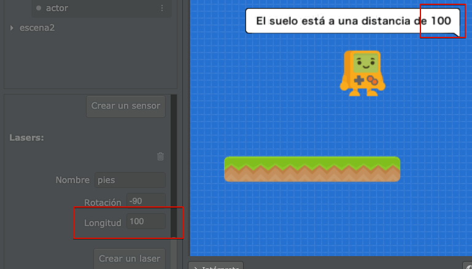
Спочатку здається дивним, що він повертає довжину лазера, але насправді це щось дуже практичне, тому що майже завжди відстані будуть оцінюватися за допомогою вказівки розгалуження if і з деяким порівнянням.
Подивіться на цей приклад, якщо ми хочемо анімувати актора відповідно до відстані від платформи, ми можемо написати код у методі actualizar:
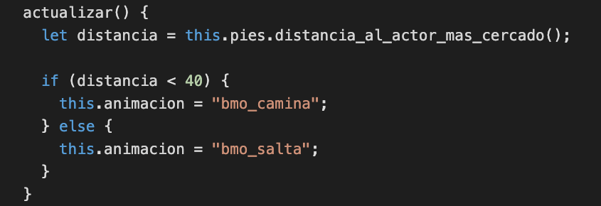
Результат буде таким:
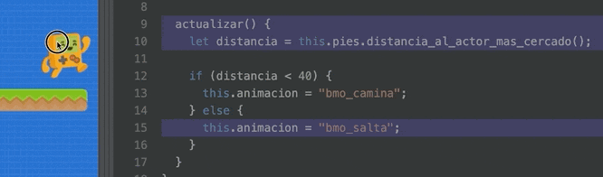
Тобто, завдяки тому факту, що лазер повертає відстань у вигляді числа, ми можемо "сказати" акторові, що якщо відстань менша за 40, ми хочемо, щоб він показував анімацію "correr" (біг), і якщо ця відстань більша, ніж 40, ми хочемо, щоб він показував анімацію "salto" (стрибок).
Лазери, які ми створюємо за допомогою редактора, ідеально підходять для візуалізації, налаштування та легкого розуміння суті концепції відстані та зіткнень по прямій лінії.
Однак є дуже специфічні випадки, коли ми зацікавлені в обчисленні відстаней або зіткнень безпосередньо з коду. Для цих випадків використовують "instantáneos" (миттєві) лазери.
Лазери "instantáneos" можна створити за допомогою функції laser, яка отримує покликання на актора, координати початкової та кінцевої точок. І в результаті функція повертає список із усіма зіткненнями, які відбуваються на шляху лазера:
let resultado = this.pilas.laser(this, this.x, this.y, this.x + 400, this.y);
this.pilas.observar("resultado", resultado);
this.pilas.observar("cantidad de colisiones", resultado.length);Існує ще одна дуже схожа функція, яка називається laser_al_primer_actor, яка також приймає мітку, щоб ми могли виявити відстані до певного типу акторів.
Ці дві функції досить потужні, тому, якщо ви хочете дізнатися про них більше, рекомендуємо вам переглянути довідку по функціям.